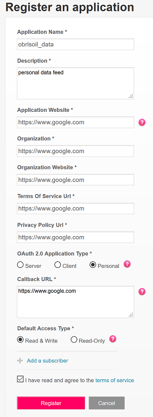
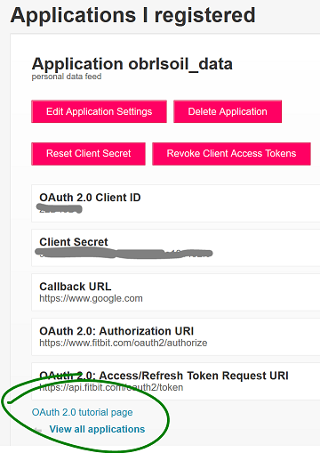
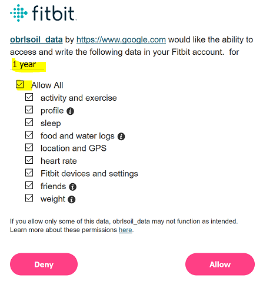

![]()
library(httr)
library(tidyverse)Playing with the Fitbit API in R
R
better living through APIs
the quantified life
punching on
fitbit
In which the author uses the FitBit API to live a more quantified life
Background
So I’ve been going to this boxing/HIIT style gym for a while, which is fantastic because it turns out I love punching things and suffering. I almost have abs now! The gym is quite big on using personal analytics to track progress, so they offer the MyZone brand of fitness tracker, which is centred around the use of a chest strap. The strap monitors heart rate and uses it to calculate ‘MyZone Effort Points’ (MEPS). More suffering == more points, and there’s a big TV in the gym where MyZone user’s scores are visible for comparison. I’m well aware that the only person I’m really competing with is me-last-week, but I’m still curious about what kind of scores I get during my workouts.
I’ve worn a Fitbit for several years, is the thing, and I’m both averse to change and an inveterate cheapskate, so I didn’t really want to switch brands (or worse, wear both). So, how can I compare the data FitBit records for me when I’m working out to the data recorded by MyZone?
R, of course. And the magic of APIs. Read on for how.
First, I needed to see if I could access minute-by-minute heart rate data from FitBit, because I couldn’t calculate MEPS without that. I’m using a Charge 2 at present, and the FitBit mobile app provides graphs of heart-rate data during activities that are clearly high-resolution. That data’s gotta be somewhere and I wants it *grabby hands*
There are a few blog posts around about accessing FitBit data in R, but they seem to date quickly - access methods have not been very stable over time. Same goes for Stack Overflow and Fitbit’s own forums! There was also a package or two floating about, but they appear defunct. Distilling a few posts like this one and this one together with the official documentation got me where I needed to be, so current to July 2018, my procedure to get at my own intraday heart rate data is this:
- Go to https://dev.fitbit.com/ and click on Manage > Register an App.
- Login with fitbit credentials and follow the prompts. Name the ‘app’ something neutral like ‘my-data’, choose app type ‘Personal’ and throw in www.google.com or something similar wherever a URL is asked for (the only important one is callback url).

- Once the app is created, click on the ‘OAuth 2.0 tutorial page’ link near the bottom of the screen:

- Scroll down to the end of section 1 and click on the provided authorisation URL. A new tab will open, showing the FitBit authorisation interface:

- I changed the auth period to 1 year so I don’t have to go through this too often, and ticked all options before clicking Allow, because I’ll probably play with the other endpoints at some point.
- After clicking Allow, the browser tab redirects to the callback URL, but a whole lot of other stuff is now in the URL visible in the address bar. Copy the whole lot and go back to the OAuth 2.0 tutorial page. Paste that URL into the text box under the ‘2. Parse Response’ header. The access token will appear below the text box - its a long string of characters.
- Save that token as an environment variable so its not stored unsecured. Clicking around on Windows, this is Control Panel > System > Advanced System Settings > Environment Variables… . I save mine as a User variable called ‘FITB_AUTH’. NB: You’ll then have to close and reopen RStudio if you do all this while its running.
With all that in place, I can finally write some damn R code.
Before starting to extract data, its a good idea to check that one’s token is definitely working. The FitBit API has a “Retrieve State of Tokens” endpoint for this:
check_state <- function(token = NULL) {
POST(url = 'https://api.fitbit.com/1.1/oauth2/introspect',
add_headers(Authorization = paste0('Bearer ', token)),
body = paste0('token=', token),
content_type('application/x-www-form-urlencoded'))
}
state <- check_state(token = Sys.getenv('FITB_AUTH'))
content(state)$active## [1] TRUEMy token is active, so I can proceed.
My last workout was Monday night. I used the Charge 2’s manual logging feature, so I know exactly when my workout started and finished. A GET request to retrieve minute-by-minute heart rate data for a set period looks like:
get_workout <- function(date = NULL, start_time = NULL, end_time = NULL,
token = Sys.getenv('FITB_AUTH')) {
GET(url =
paste0('https://api.fitbit.com/1/user/-/activities/heart/date/',
date, '/1d/1min/time/', start_time, '/', end_time, '.json'),
add_headers(Authorization = paste0("Bearer ", token)))
}
got_workout <- get_workout(date = '2018-07-30',
start_time = '18:47', end_time = '19:28')The actual data can be seen using content():
workout <- content(got_workout)It does come in all list-ified, which can be a little tricky to sort out. purrr functions are real lifesavers here. I’m going to turn a couple of sub-lists into data frames below - FitBit’s own workout summary, and the actual heart rate by minute data I’m after:
# json-as-list to dataframe (for simple cases without nesting!)
jsonlist_to_df <- function(data = NULL) {
purrr::transpose(data) %>%
purrr::map(., unlist) %>%
as_tibble(., stringsAsFactors = FALSE)
}
# summary
workout[['activities-heart']][[1]][['heartRateZones']] <-
jsonlist_to_df(workout[['activities-heart']][[1]][['heartRateZones']])
# the good stuff
workout[['activities-heart-intraday']][['dataset']] <-
jsonlist_to_df(workout[['activities-heart-intraday']][['dataset']])
# also let's get time formatted properly
workout$`activities-heart-intraday`$dataset$time <-
as.POSIXlt(workout$`activities-heart-intraday`$dataset$time, format = '%H:%M:%S')
lubridate::date(workout$`activities-heart-intraday`$dataset$time) <- '2018-07-30'
lubridate::tz(workout$`activities-heart-intraday`$dataset$time) <- 'Australia/Brisbane'
# looks better now:
workout## $`activities-heart`
## $`activities-heart`[[1]]
## $`activities-heart`[[1]]$customHeartRateZones
## list()
##
## $`activities-heart`[[1]]$dateTime
## [1] "2018-07-30"
##
## $`activities-heart`[[1]]$heartRateZones
## # A tibble: 4 x 5
## caloriesOut max min minutes name
## <dbl> <int> <int> <int> <chr>
## 1 0 93 30 0 Out of Range
## 2 62.1 130 93 11 Fat Burn
## 3 230. 158 130 30 Cardio
## 4 9.30 220 158 1 Peak
##
## $`activities-heart`[[1]]$value
## [1] "136.67"
##
##
##
## $`activities-heart-intraday`
## $`activities-heart-intraday`$dataset
## # A tibble: 42 x 2
## time value
## <S3: POSIXlt> <int>
## 1 2018-07-30 18:47:00 99
## 2 2018-07-30 18:48:00 113
## 3 2018-07-30 18:49:00 135
## 4 2018-07-30 18:50:00 146
## 5 2018-07-30 18:51:00 153
## 6 2018-07-30 18:52:00 152
## 7 2018-07-30 18:53:00 155
## 8 2018-07-30 18:54:00 160
## 9 2018-07-30 18:55:00 152
## 10 2018-07-30 18:56:00 151
## # ... with 32 more rows
##
## $`activities-heart-intraday`$datasetInterval
## [1] 1
##
## $`activities-heart-intraday`$datasetType
## [1] "minute"Now, as I mentioned way back up top, MEPS are calculated minute-by-minute as a percentage of max heart rate. The formula used to calculate max heart rate is on the MyZone website:
meps_max <- function(age = NULL) { 207 - (0.7 * age) }Which makes mine 183. Note that this can be less accurate for some people, but as a depressingly average soul I don’t get to complain. Five MEPS zones are defined using percentage range of max HR (e.g. 3 MEPS/min at 70-79% of max HR), and I can calculate the appropriate heart-rate ranges for myself like this:
# I <3 tribble
my_MEPS <- tribble(~MEPS, ~hr_range, ~hr_lo, ~hr_hi,
1, '50-59%', 0.50, 0.59,
2, '60-69%', 0.60, 0.69,
3, '70-79%', 0.70, 0.79,
4, '>=80', 0.80, 1.00) %>%
mutate(my_hr_low = floor(meps_max(34) * hr_lo),
my_hr_hi = ceiling(meps_max(34) * hr_hi))
my_MEPS## # A tibble: 4 x 6
## MEPS hr_range hr_lo hr_hi my_hr_low my_hr_hi
## <dbl> <chr> <dbl> <dbl> <dbl> <dbl>
## 1 1 50-59% 0.5 0.59 91 109
## 2 2 60-69% 0.6 0.69 109 127
## 3 3 70-79% 0.7 0.79 128 145
## 4 4 >=80 0.8 1 146 184Using that data, calculating total MEPS goes like this:
mutate(workout$`activities-heart-intraday`$dataset,
meps = case_when(value >= 146 ~ 4,
value >= 128 ~ 3,
value >= 109 ~ 2,
value >= 91 ~ 1,
TRUE ~ 0)) %>%
summarise("Total MEPS" = sum(meps))## # A tibble: 1 x 1
## `Total MEPS`
## <dbl>
## 1 130Given that the maximum possible MEPS in a 42-minute workout is 168, this isn’t too bad. Its also fairly consistent with past workouts. I kind of knew I’d done ok from how I had trouble lifting my arms after, but its nice to have the numbers to back that up :P
So there it is. Unfortunately this setup still isn’t ideal - httr’s Oauth 2.0 authorisation code flow doesn’t seem to quite work for FitBit and I’m not 100% sure why. The request functions above would be a bit simpler if I could get the ‘oauth dance’ to work, and I could also skip that whole ‘faffing around on dev.fitbit.com’ section. As it stands, I get to the oauth2.0_token() step and then it just sits in the browser while waiting for authentication. I’ve been poking away at this post on and off for literal months trying to crack it, but no dice. So whatever, perfect is the enemy of good and I know as soon as I post this, someone’s going to reply with an amazingly simple solution :P
Citation
BibTeX citation:
@unpublished{o'brien2018,
author = {O’Brien, Lauren},
title = {Playing with the {Fitbit} {API} in {R}},
date = {2018-08-01},
url = {https://obrl-soil.github.io/posts/2018-08-01_fitbit-api-r},
langid = {en}
}
For attribution, please cite this work as:
O’Brien, Lauren. 2018. “Playing with the Fitbit API in R.”
https://obrl-soil.github.io/posts/2018-08-01_fitbit-api-r.